Día 1
40 personas
2:00 a 5:00 p.m.
Combinación sugerida:
- Una Fábrica de Animales
- Cartografías Corporales
- El Gran Caballo Blanco
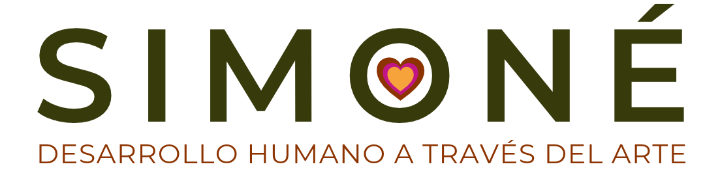
Desarrollo humano a través del arte
Dos tardes de experiencias artísticas para que las personas bajen el ritmo, reconozcan lo que sienten, se comuniquen con más claridad y descubran lo que logran cuando trabajan como un solo equipo. Nadie necesita saber pintar: el arte es el canal.
Por qué el arte
La presión del día a día se acumula en el cuerpo y en las conversaciones. Muchas veces el equipo sabe lo que debería cambiar, pero no encuentra el momento ni las palabras para hablarlo.
Cuando las personas pintan, construyen y crean juntas, salen de sus roles habituales. Se escuchan de otra manera, se ríen, se equivocan sin miedo y descubren que la obra solo funciona si cada parte aporta. Eso es lo que se llevan de vuelta al trabajo.
El evento
Cada grupo vive una tarde que recorre los cuatro temas. Proponemos una combinación de proyectos para cada día; la ajustamos con ustedes según los objetivos del evento.
Día 1
40 personas
2:00 a 5:00 p.m.
Combinación sugerida:
Día 2
30 personas
2:00 a 5:00 p.m.
Combinación sugerida:
Así transcurre cada tarde
La tarde va de lo individual a lo colectivo: primero cada persona se encuentra consigo misma, luego el grupo construye algo que nadie podría hacer solo.
Proyectos que podemos realizar
Todos los proyectos han sido probados con equipos de empresas. Elegimos juntos los que mejor respondan a lo que quieren trabajar.
Taller insignia de Simoné · Trabajo en equipo
Articulación, comunicación y sinergia
El caballo blanco es una metáfora de fuerza, dirección y nobleza. Cada participante pinta un fragmento sin ver la obra completa; al final, todas las piezas se unen para formar una sola imagen. El grupo descubre que el resultado depende de que cada persona haga bien su parte y se coordine con las demás.
Manejo del estrés · Gestión emocional
El cuerpo como mapa de lo que sentimos
Cada persona convierte una silueta en un mapa: dónde siente la tensión, dónde la calma, qué le da fuerza. Al compartir sus cartografías, el grupo entiende cómo el estrés se instala en el cuerpo y se reconoce desde un lugar más humano y cercano.
Gestión emocional · Autodiagnóstico
Un autodiagnóstico para momentos de cambio
Cada persona pinta un autorretrato dividido en dos mitades: en rojo, los pensamientos que limitan, los miedos y lo que aún falta por formar; en azul, las motivaciones y los recursos con los que ya cuenta. El ejercicio cierra con una pregunta: ¿a dónde quiero llegar? Es especialmente útil en etapas de transformación y cambio dentro de las organizaciones, cuando cada persona necesita ubicarse frente a lo nuevo.
Trabajo en equipo
La diversidad que forma un todo
Un collage colectivo en el que cada persona aporta sus propios retazos de color. Ningún cuadro es igual a otro y, justamente por eso, el conjunto resulta único. Una conversación sobre cómo las diferencias suman cuando el equipo las reconoce y las integra.
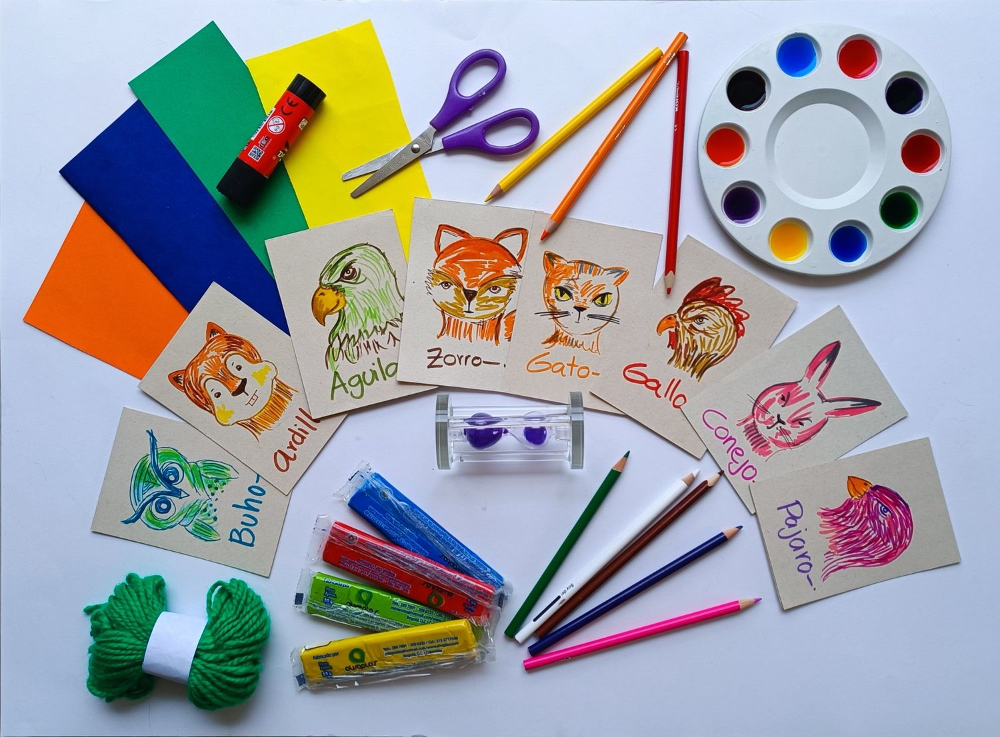
Comunicación · Trabajo articulado
Producir en equipo, contra reloj y bajo presión
El equipo se convierte en una fábrica que debe producir búhos, águilas, zorros, conejos y otros animales con papel, plastilina, lana y color. El reloj de arena marca el ritmo: hay que comunicarse con claridad, repartir tareas, articular cada etapa del proceso y sostener la calidad mientras el tiempo corre. Una experiencia para vivir y conversar sobre la gestión del tiempo y la gestión de la presión.
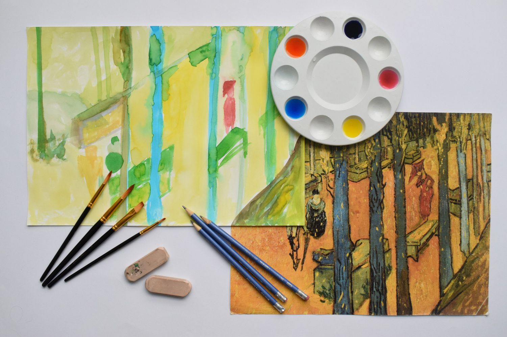
Comunicación asertiva · Manejo de la frustración
Un dictado visual que pone a prueba cómo nos comunicamos
Una persona dibuja a ciegas lo que su equipo le va dictando a partir de una imagen que solo ellos pueden ver. Para lograrlo, el equipo tiene que encontrar las palabras precisas, escuchar, tener paciencia y ajustar las instrucciones sobre la marcha. Este dictado visual pone a prueba la tolerancia a la frustración, el esfuerzo sostenido y nuestra capacidad para comunicarnos.

Manejo del estrés
Action painting para la catarsis
Una conversación sobre el estrés y sobre cómo se concentra en zonas específicas del cuerpo. A partir de ese reconocimiento, el grupo pasa a la acción: chorrear, salpicar y dejar caer la pintura sobre lienzos en el piso. El gesto amplio y libre del action painting permite descargar la tensión y convertirla en una obra llena de energía.
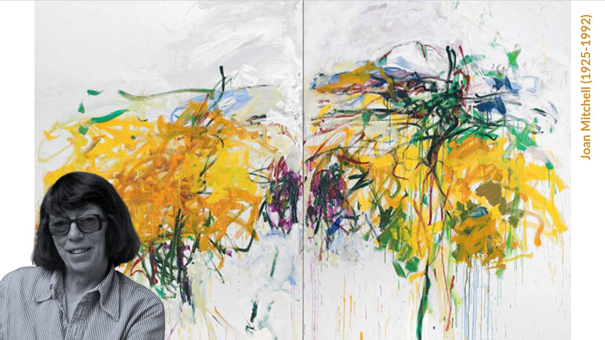
Manejo del estrés · Gestión emocional
Inspirada en Joan Mitchell
Un laboratorio de liberación creativa inspirado en el expresionismo abstracto de Joan Mitchell, quien pintaba lo que sentía más que lo que veía. Con movimiento corporal, pintura fluida y música rítmica, los participantes usan todo su cuerpo para llevar al papel emociones difíciles de verbalizar. Una experiencia dinámica para romper la rutina, activar el impulso creativo y transformar la tensión acumulada en una obra colectiva.
Experiencias con empresas
Así se ven las personas aprendiendo y compartiendo a través del arte
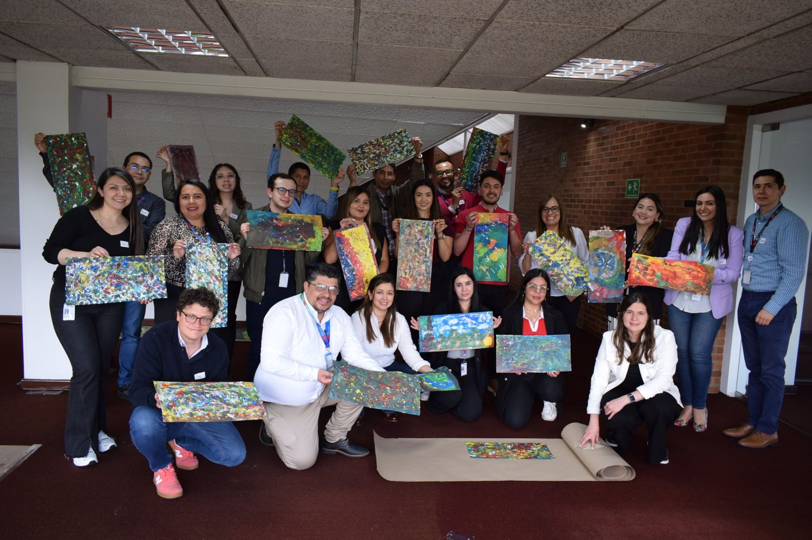
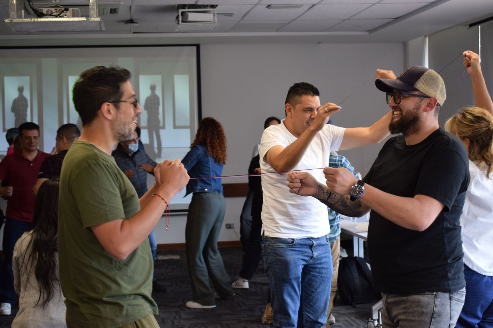
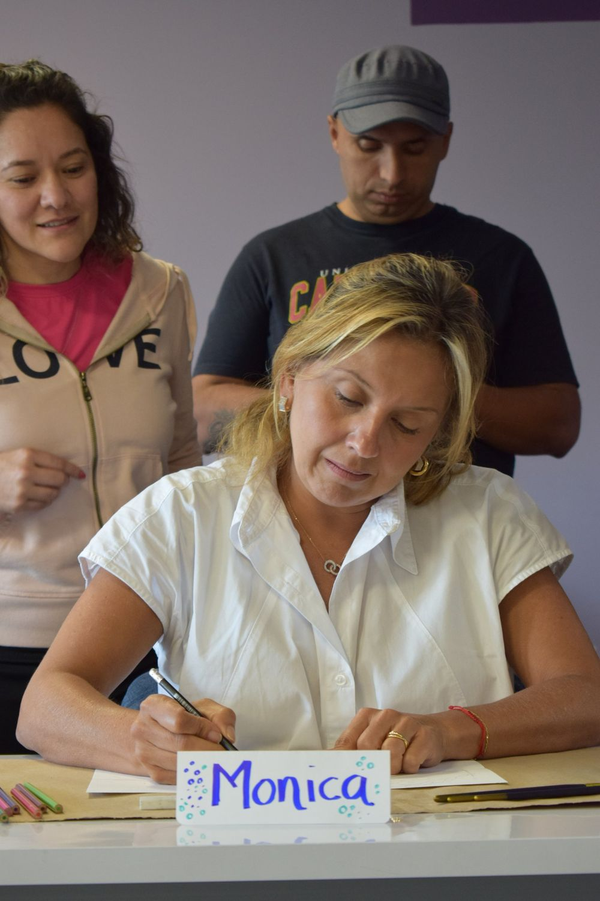
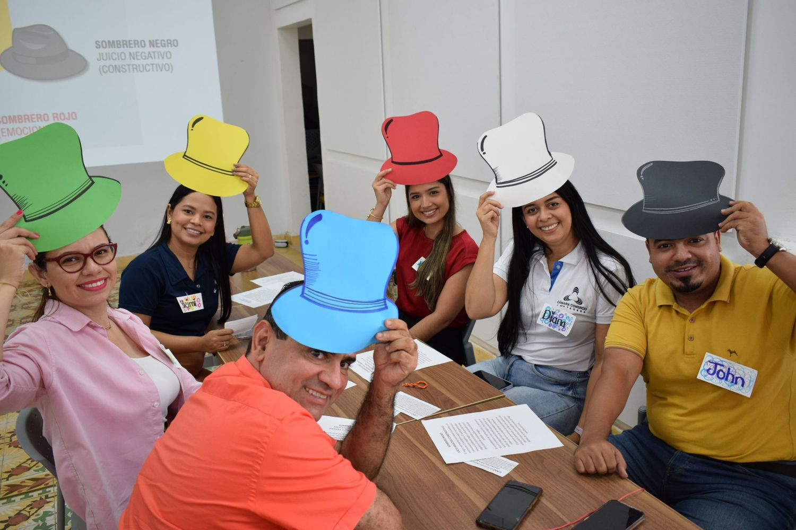
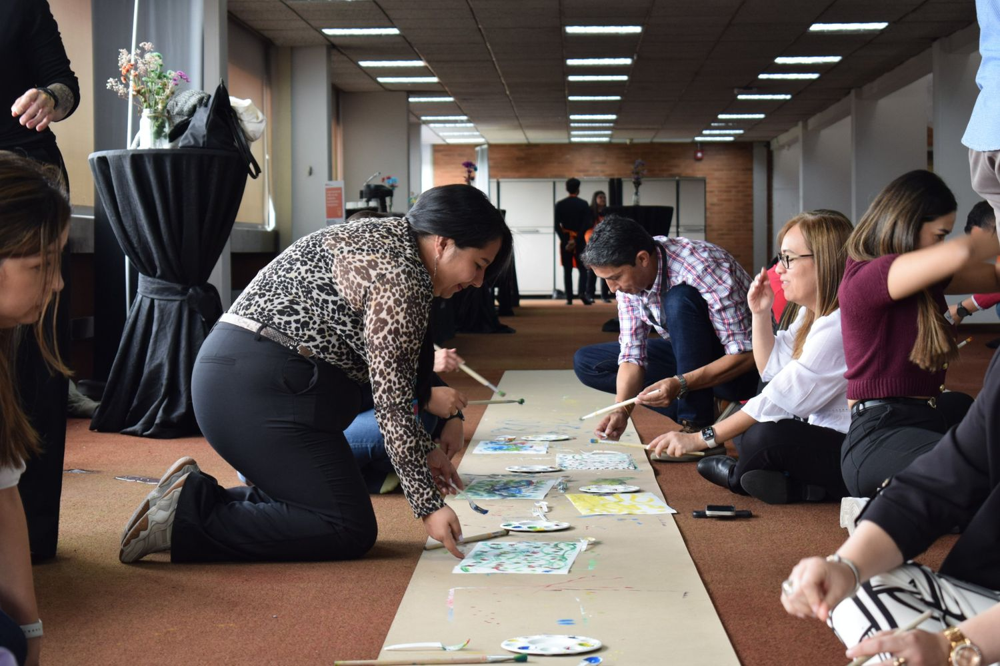
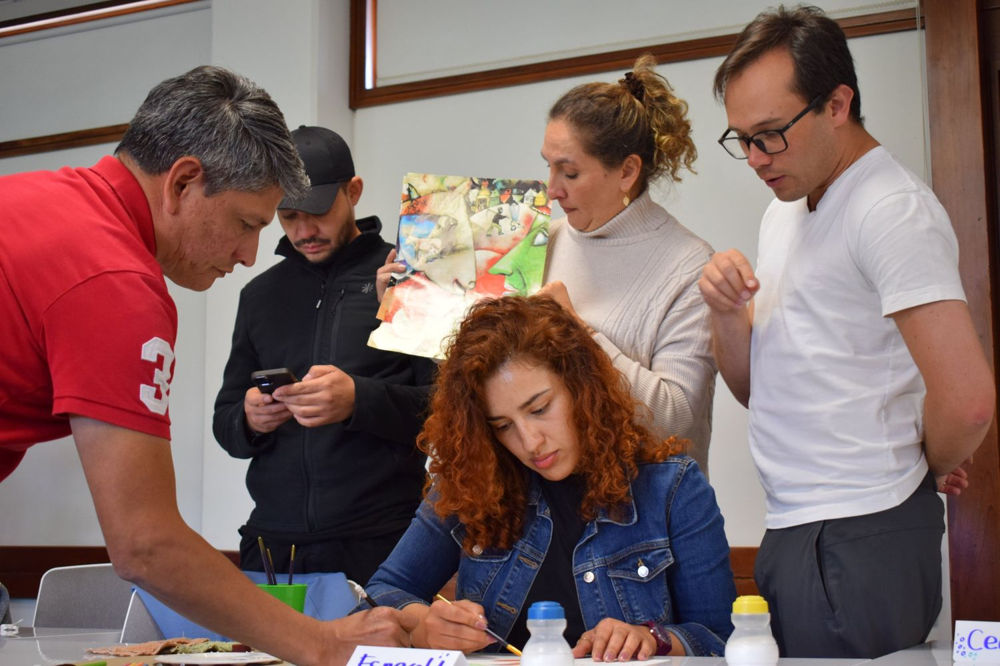
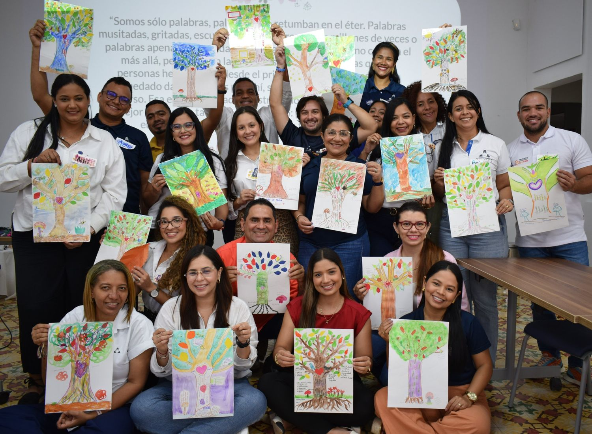
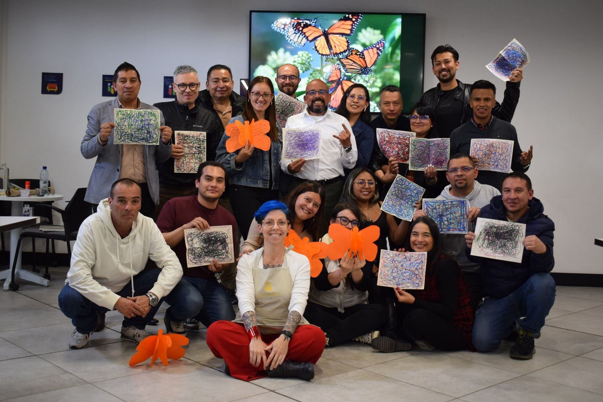
Qué incluye
Pinturas, papeles, pinceles, plastilina, lana y todo lo necesario para cada proyecto, en los dos días.
Mediación del conocimiento y acompañamiento cercano para que cada participante esté atendido.
Fotografías de las dos tardes: las personas, el proceso y las obras creadas.
Documento que recoge lo vivido, los aprendizajes y las reflexiones del grupo.
Mesas de trabajo de arte. Si el espacio no cuenta con ellas, las llevamos nosotras.
Inversión
| Día | Participantes | Horario |
|---|---|---|
| Día 1 | 40 personas | 2:00 a 5:00 p.m. |
| Día 2 | 30 personas | 2:00 a 5:00 p.m. |
| Total | 70 personas | 6 horas de experiencia |
Inversión total · 70 participantes
$7.875.000 + IVAEquivale a $112.500 + IVA por participante. Incluye materiales de arte, equipo de 3 mediadores cada día, registro fotográfico y memorias del evento.
Valores en pesos colombianos. Las mesas de trabajo de arte se incluyen sin costo adicional si el espacio las requiere.
Mediadora líder
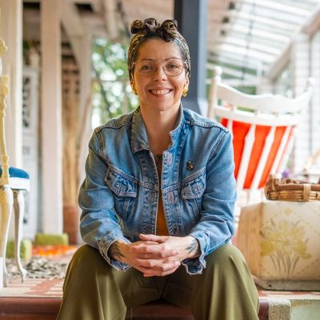
Mediadora líder · Directora de Simoné
En Simoné no hablamos de talleristas ni de capacitadores: somos mediadores del conocimiento, porque trabajamos bajo el modelo de educación experiencial. Nathalia diseña y guía cada experiencia; en este evento la acompaña un equipo de tres mediadores cada día, para que los grupos de 40 y 30 participantes reciban atención cercana durante toda la tarde.
Ver perfil en LinkedIn →Próximos pasos
Escríbenos
nathalia@experienciasimone.comTambién
experienciasimone@gmail.com